Data Analysis
Data analysis
- Input
- One or multiple constructed datasets
- Steps
- Exploratory analysis: explore, describe and look for patterns in the data
- Final data analysis: create and export polished tables and graphs
- Output
- Excel tables
- PNG or JPG images
- Documentation
Exploratory analysis
- During exploratory analysis, we will explore the data and look for patterns
- At this stage, we are looking to understand the data rather than to present findings
- We will create code, but not necessarily export outputs or spend time making sure graphs and tables are well-presented
Exploratory analysis: setting the stage
- Open a new do-file in the do-file editor
- Load the dataset that you want to explore
. use "../DataWork/Data/Final/final_process.dta", clear
Note that:
- We have created multiple constructed datasets, with different levels of observation
- We will explore each of them separately
- If you want to explore variables that are not in the dataset yet, go back to construction and create them
Exploratory analysis: useful commands
codebook: to describe the dataset and individual variablessummarize: to see descriptive statistics for continuous variablestabulate: to create frequency tableshistogram: to create a histogramskdensity: to create a density graph for continuous variablesscatter: to quickly visualize the relationship between two variables
Exploratory analysis: codebook
codebook [varlist] [if] [in] [, options]- Explore the entire dataset:
codebook- Explore selected variables:
codebook varlistExploratory analysis: codebook
codebook [varlist] [if] [in] [, options]Explore the specific variables:
. codebook process_value process_type
───────────────────────────────────────────────────────────────────────────────────────────────────────────────────────────────────────────────────
process_value Process Value
───────────────────────────────────────────────────────────────────────────────────────────────────────────────────────────────────────────────────
type: numeric (float)
range: [294.8,2.043e+09] units: .01
unique values: 7,272 missing .: 0/25,000
mean: 4.5e+06
std. dev: 3.6e+07
percentiles: 10% 25% 50% 75% 90%
250000 400000 848000 2.1e+06 6.0e+06
───────────────────────────────────────────────────────────────────────────────────────────────────────────────────────────────────────────────────
process_type Processing Type
───────────────────────────────────────────────────────────────────────────────────────────────────────────────────────────────────────────────────
type: numeric (long)
label: process_type
range: [1,3] units: 1
unique values: 3 missing .: 8/25,000
tabulation: Freq. Numeric Label
1,691 1 Closed
21,043 2 Open
2,258 3 Restricted
8 .
Exploratory analysis: summarize
summarize [varlist] [if] [in] [weight] [, options]Exercise: Use summarize to explore the variables process_value and process_type
Exploratory analysis: summarize
summarize [varlist] [if] [in] [weight] [, options]Exercise: Use summarize to explore the variables process_value and process_type
. summarize process_value process_type
Variable │ Obs Mean Std. Dev. Min Max
─────────────┼─────────────────────────────────────────────────────────
process_va~e │ 25,000 4478843 3.60e+07 294.8 2.04e+09
process_type │ 24,992 2.022687 .3968654 1 3
Exploratory analysis: summarize
summarize [varlist] [if] [in] [weight] [, options]- Using the option
detailwill include more information about the distribution
. summarize process_value, detail
Process Value
─────────────────────────────────────────────────────────────
Percentiles Smallest
1% 63285.75 294.8
5% 200000 464.79
10% 250000 990.23 Obs 25,000
25% 400000 1414.61 Sum of Wgt. 25,000
50% 848000 Mean 4478843
Largest Std. Dev. 3.60e+07
75% 2060000 1.78e+09
90% 6000000 1.90e+09 Variance 1.29e+15
95% 1.26e+07 2.04e+09 Skewness 40.09512
99% 6.00e+07 2.04e+09 Kurtosis 1987.837
Exploratory analysis: tabulate one way
tabulate varname [if] [in] [weight] [, options]Exercise: use tabulate to explore the variable procurement_type
Exploratory analysis: tabulate one way
tabulate varname [if] [in] [weight] [, options]Exercise: use tabulate to explore the variable procurement_type
. tabulate procurement_type
Procurement │
Type │ Freq. Percent Cum.
────────────┼───────────────────────────────────
Goods │ 11,150 44.63 44.63
Services │ 8,119 32.50 77.12
Works │ 5,716 22.88 100.00
────────────┼───────────────────────────────────
Total │ 24,985 100.00
Exploratory analysis: tabulate two way
tabulate varname1 varname2 [if] [in] [weight] [, options]Exercise: use tabulate to explore the relationship between variables procurement_type and process_type
Exploratory analysis: tabulate two way
tabulate varname1 varname2 [if] [in] [weight] [, options]Exercise: use tabulate to explore the relationship between variables procurement_type and process_type
. tabulate procurement_type process_type
Procuremen │ Processing Type
t Type │ Closed Open Restricte │ Total
───────────┼─────────────────────────────────┼──────────
Goods │ 615 9,593 940 │ 11,148
Services │ 781 6,315 1,020 │ 8,116
Works │ 295 5,120 298 │ 5,713
───────────┼─────────────────────────────────┼──────────
Total │ 1,691 21,028 2,258 │ 24,977
Exploratory analysis: histogram
histogram varname [if] [in] [weight] [, [continuous_opts | discrete_opts] options]Exercise: use histogram to explore the distibrution of variable month_init
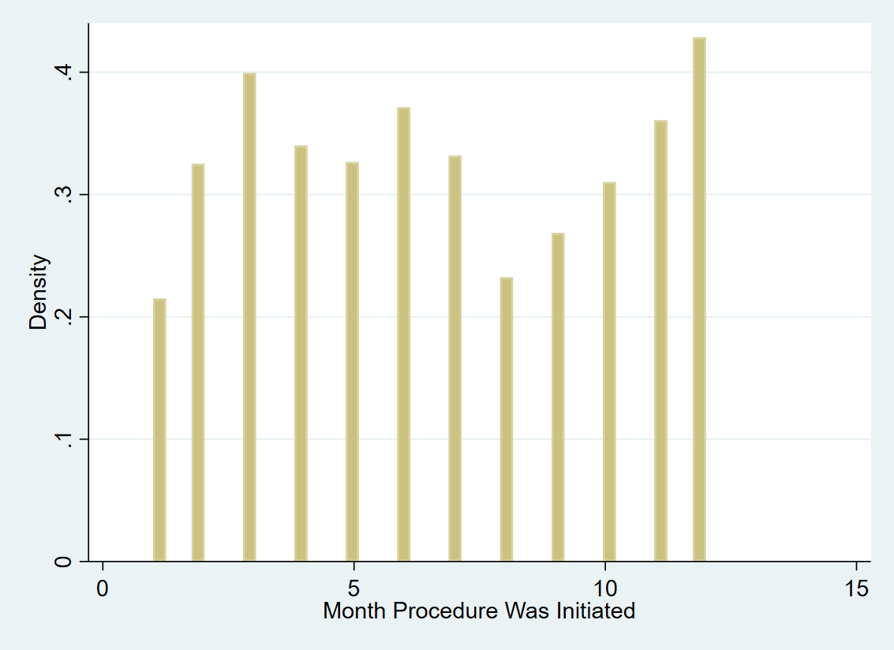
Exploratory analysis: histogram
histogram varname [if] [in] [weight] [, [continuous_opts | discrete_opts] options]Exercise: use histogram to explore the distibrution of variable month_init
histogram month_initExploratory analysis: histogram
histogram varname [if] [in] [weight] [, [continuous_opts | discrete_opts] options]histogram month_init, discrete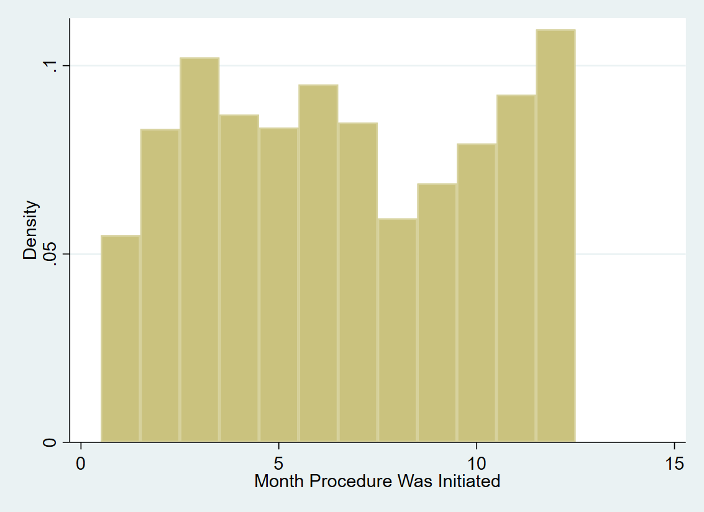
Exploratory analysis: kdensity
kdensity varname [if] [in] [weight] [, options]kdensity bid_submission_period
Exploratory analysis: kdensity
kdensity varname [if] [in] [weight] [, options]Exercise: use kdensity to explore the distribution of variable bid_submission_period only for processes where the period is shorter than 100 days

Exploratory analysis: kdensity
kdensity varname [if] [in] [weight] [, options]Exercise: use kdensity to explore the distribution of variable bid_submission_period only for processes where the period is shorter than 100 days
kdensity bid_submission_period if bid_submission_period < 100
Exploratory analysis: scatter
scatter varlist [if] [in] [weight] [, options]Exercise: use scatter to explore the relationship between variables nr_nonlocal_bidders and nr_participants
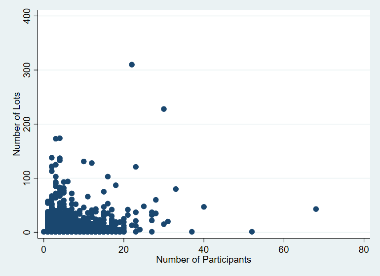
Exploratory analysis: scatter
scatter varlist [if] [in] [weight] [, options]Exercise: use scatter to explore the relationship between variables nr_nonlocal_bidders and nr_participants
scatter nr_nonlocal_bidders nr_participantsExploratory analysis: graph bar
graph bar yvars [if] [in] [weight] [, options]
graph hbar yvars [if] [in] [weight] [, options]Exercise: use graph bar to explore the variable process_value
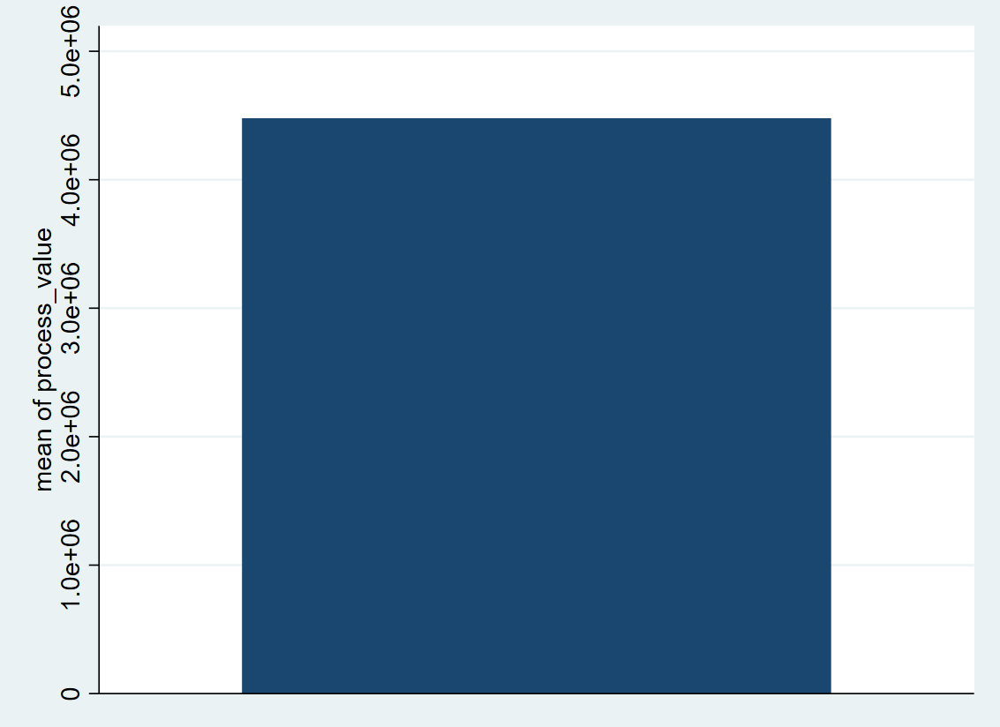
Exploratory analysis: graph bar
Exercise: use graph bar to explore the variable process_value
graph bar process_valueNote that by default a bar graph displays the average value of a continuous variable
Exploratory analysis: graph bar
Use the option over() to break down a bar graph into groups
graph bar process_value, over(procurement_type){width=40%}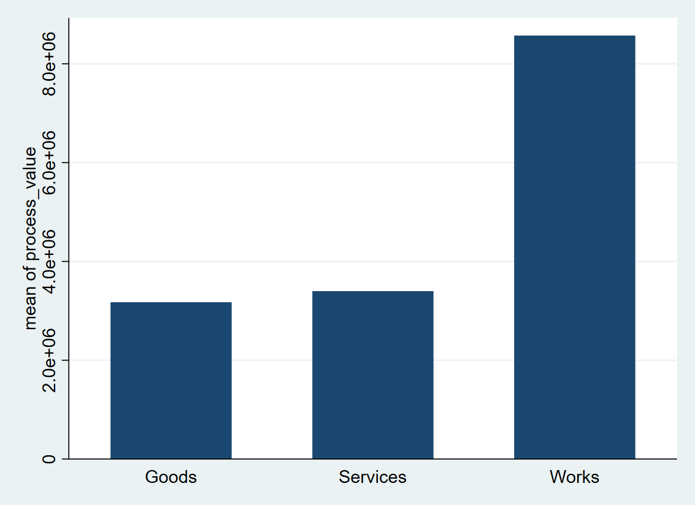
Exploratory analysis: graph bar
Write (stat), where stat represents the statistic to be calculated, before a variable’s name to show a statistic other than the mean
graph bar (sum) process_value, over(procurement_type)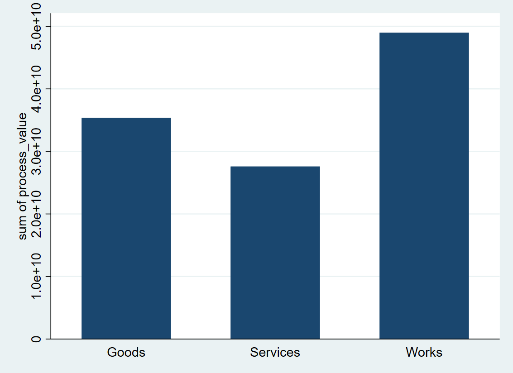
Exploratory analysis: graph bar
- Possible values of
statare:sumcountmeanmedianpercent
Exploratory analysis: graph bar
graph bar yvars [if] [in] [weight] [, options]
graph hbar yvars [if] [in] [weight] [, options]Exercise: Create a horizontal bar graph that shows the number of processes with each procurement type
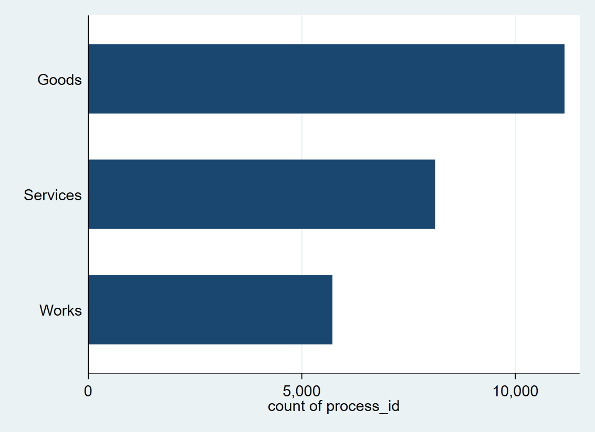
Exercise: Create a horizontal bar graph that shows the number of processes with each procurement type
graph hbar (count) process_id, over(procurement_type)Exploratory analysis: graph bar
graph bar yvars [if] [in] [weight] [, options]
graph hbar yvars [if] [in] [weight] [, options]Exercise: Create a horizontal bar graph that shows the number of processes with each procurement type
graph hbar (count) process_id, over(procurement_type)Final analysis
- Once we have explored the data and understood what it is showing us, we will decide how to present our results
- Formatting outputs to make sure they include all relevant information can be very time-consuming
- We will only spend time formatting the outputs that we want to share with others
Final analysis: setting the stage
- Save the code that you wrote for exploratory analysis on the
Code/Analysisfolder. Call itexplore-process-data.do. - Open a new script
- Load the data that you want to use
- Copy the code that created the graph you want to polish
Final analysis: graph bar
Untitled
use "../DataWork/Data/Final/final_process.dta"
graph bar (count) process_id, over(procurement_type) Final analysis: graph bar
To change the axis title, use xtitle() or ytitle()
graph bar (count) process_id, ///
over(procurement_type) ///
ytitle("Number of processes") <----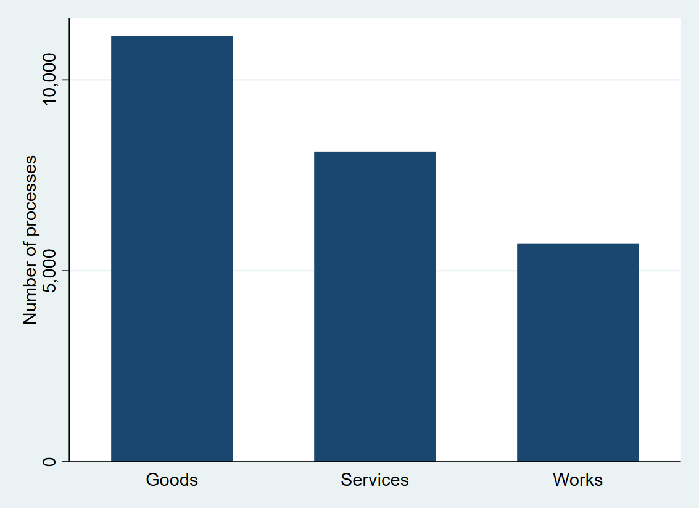
Final analysis: graph bar
To add labels to the bars, use the option blabel()
graph bar (count) process_id, ///
over(procurement_type) ///
ytitle("Number of processes") ///
blabel(total) <----
Final analysis: graph bar
To change the background color, use the option graphregion(color())
graph bar (count) process_id, ///
over(procurement_type) ///
ytitle("Number of processes") ///
blabel(total) ///
graphregion(color(white)) <----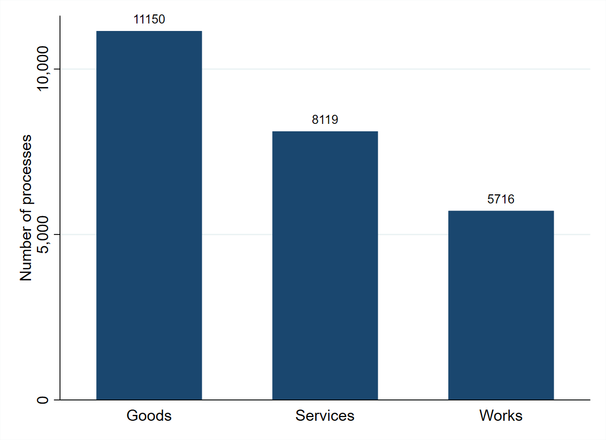
Final analysis: set scheme
An easier way to format graphs is to use pre-defined color schemes. Use the set scheme command to select a color scheme to use
ssc install blindschemes, replace
set scheme plotplain
graph bar (count) process_id, ///
over(procurement_type) ///
ytitle("Number of processes") ///
blabel(total) 
Final analysis: set scheme
See https://github.com/asjadnaqvi/Stata-schemes for more schemes
net install tsg_schemes, from("https://raw.githubusercontent.com/asjadnaqvi/Stata-schemes/main/schemes/") replace
set scheme white_tableau
graph bar (count) process_id, ///
over(procurement_type) ///
ytitle("Number of processes") ///
blabel(total) 
Final analysis: graph bar
Exercise: recreate the graph shown below.
- Tip: the color scheme is called
white_w3d
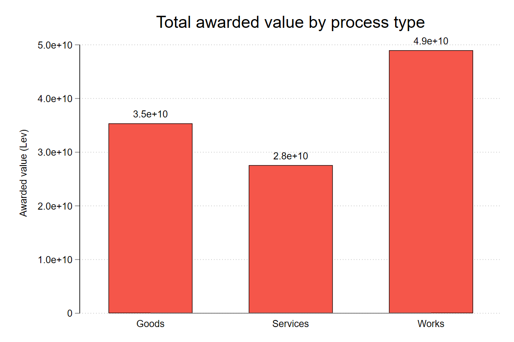
Final analysis: graph bar
Exercise: recreate the graph shown below
set scheme white_w3d
gr bar (sum) process_value, ///
over(procurement_type) ///
ytitle("Awarded value (Lev)") ///
blabel(total) ///
title("Total awarded value by process type")Final analysis: exporting outputs
- Always save outputs in easily accessible format (such as PNG ang JPEG)
- Use self-explanatory names on your graphs
- Graph names and the names of the do-files that create them should be easy to match
Final analysis: exporting graphs
graph export newfilename.suffix [, options]Exercise: Export the graph you just created to the Output folder. Call it process-value-by-procurement-type.png.
Final analysis: exporting graphs
graph export newfilename.suffix [, options]Exercise: Export the graph you just created to the Output folder. Call it process-value-by-procurement-type.png.
graph export "../DataWork/Output/process-value-by-procurement-type.png", replaceFinal analysis: saving do-files
Final analysis scripts should be short and simple:
- Load the data to be used
- Create the graph or table to be exported
- Export the graph or table
Exercise: Clean and save the do-file that created your graph to the folder Code/Analysis. Call it process-value-by-procurement-type.do
Final analysis: saving do-files
process-value-by-procurement-type.do
set scheme white_w3d
use "../DataWork/Data/Final/final_process.dta"
gr bar (sum) process_value, ///
over(procurement_type) ///
ytitle("Awarded value (Lev)") ///
blabel(total)
graph export "../DataWork/Output/process-value-by-procurement-type.png", replaceFinal analysis: saving do-files
processes-by-procurement-type.do
set scheme white_w3d
use "../DataWork/Data/Final/final_process.dta"
gr bar (sum) process_id, ///
over(procurement_type) ///
ytitle("Number of processes") ///
blabel(total)
graph export "../DataWork/Output/processes-by-procurement-type.png", replaceFinal analysis: saving do-files
Analysis scripts should be this short for a few reasons:
- In the future, we may only want to recreate one graph and not all of the graph we ever exported. In these cases, running a short script is much faster.
- We want to be able to quickly find the piece of code that created an image. It is harder to read a long script and find the exact part of the code that created it than it is to connect a graph name to a do-file name.
In the next session, we will see how to recreate many figures without opening and running each do-file individually.
Final analysis: graph pie
Slices as totals or percentages within over() categories
graph pie varname [if] [in] [weight], over(varname) [options]
Slices as frequencies within over() categories
graph pie [if] [in] [weight], over(varname) [options]Final analysis: graph pie
graph pie, over(procurement_type)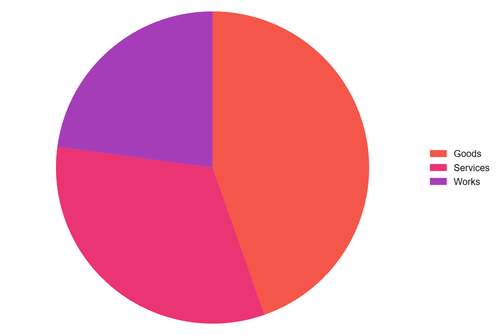
Final analysis: graph pie
graph pie process_value, over(procurement_type)Final analysis: graph pie
gr pie process_value, over(procurement_type) plabel(_all percent)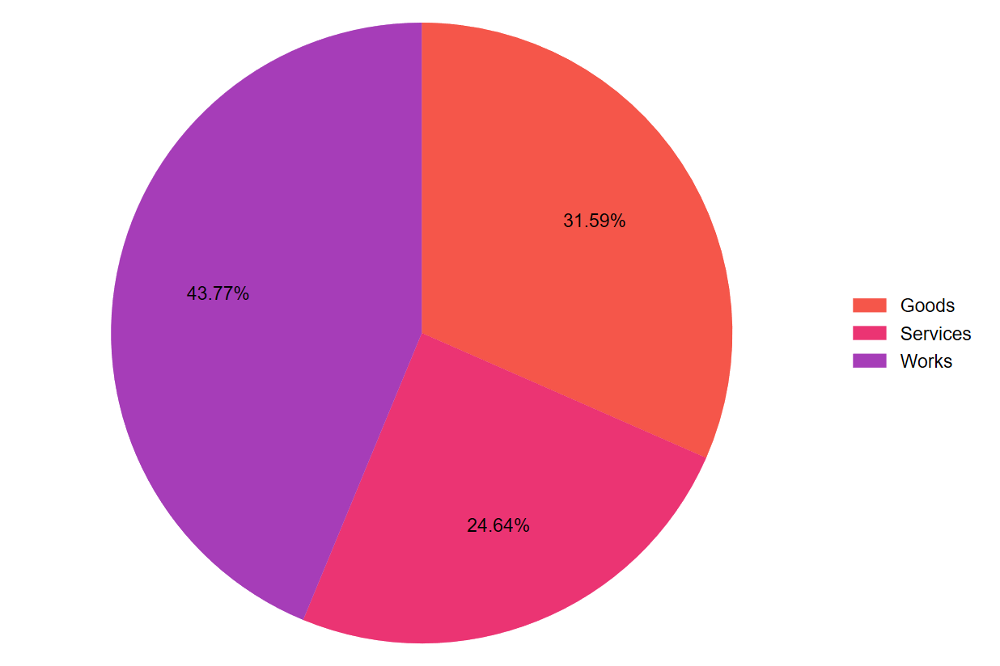
Final analysis: graph pie
gr pie process_value, over(procurement_type) plabel(_all percent) legend(position(12) cols(3))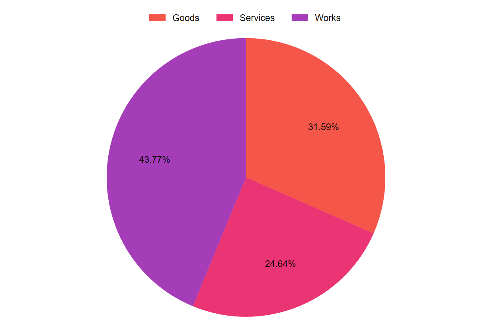
Final analysis: graph pie
gr pie process_value, over(procurement_type) plabel(_all percent) legend(position(4) cols(1))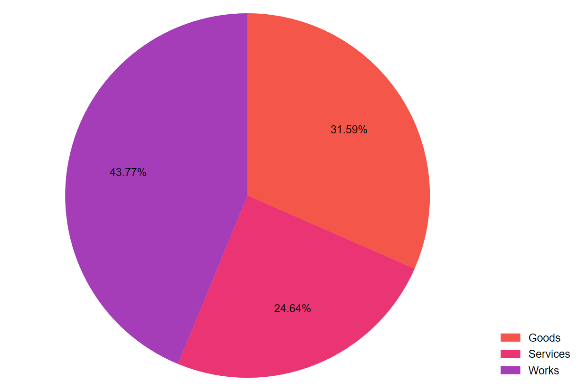
Final analysis: graph pie
gr pie process_value, over(procurement_type) plabel(_all percent, gap(10)) legend(on position(4) cols(1)) pie(2, explode)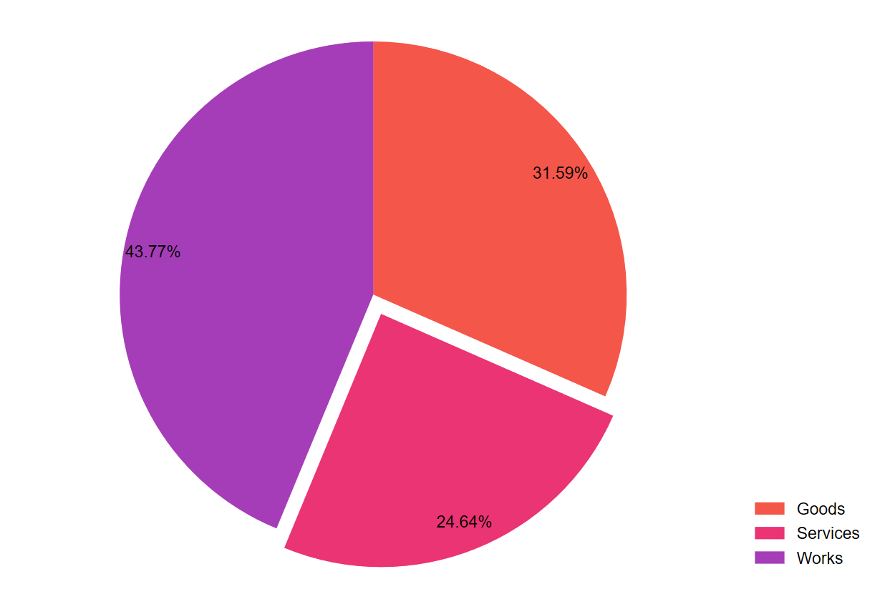
Two way graphs
- All the graphs we’ve seen so far illustrate a single continuous variable, either by itself or over a categorical variable
- To show the relationship between two continuous variables, however, another type of Stata graph is used: the two-way graph
If we wanted to see how the total process value changes over time, for example, we could simple treat time as a categorical variable and create the following graph:
gr bar (sum) process_value, over(year_init) 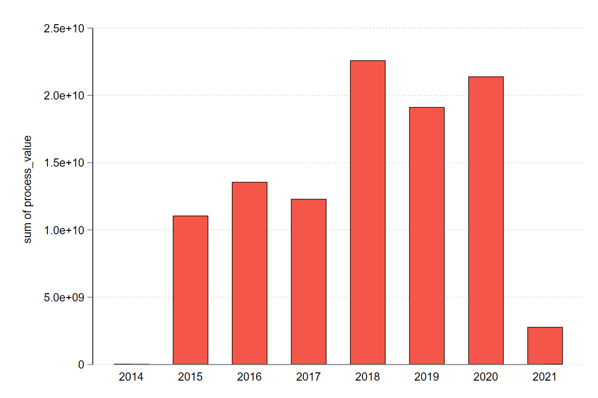
Two way graphs
- However, time trends are usually displayed as line plots, which are in Stata created as a two-way graph
- In this two-way graph, we have two continuous variables: time and process value
- When we create two-way graphs, the most important thing to have in mind is that the data used for the graph needs to be tidy
- That is, each row in the dataset should represent one data point to be displayed in the graph – we cannot group observations by calculating the mean or percent only in the graph, as we did for one way graphs
- In our example, in order to create a line plot of total process value by year, we need to start from a dataset where each row represents one year
Two-way graphs
The way to create this year-level dataset was discussed when we talked about construction:
. collapse (sum) process_value, by(year_init)
This will create the following dataset:
. codebook
───────────────────────────────────────────────────────────────────────────────────────────────────────────────────────────────────────────────────
year_init Year Procedure Was Initiated
───────────────────────────────────────────────────────────────────────────────────────────────────────────────────────────────────────────────────
type: numeric (int)
range: [2014,2021] units: 1
unique values: 8 missing .: 1/9
tabulation: Freq. Value
1 2014
1 2015
1 2016
1 2017
1 2018
1 2019
1 2020
1 2021
1 .
───────────────────────────────────────────────────────────────────────────────────────────────────────────────────────────────────────────────────
process_value (sum) process_value
───────────────────────────────────────────────────────────────────────────────────────────────────────────────────────────────────────────────────
type: numeric (double)
range: [47235395,2.260e+10] units: 1
unique values: 9 missing .: 0/9
tabulation: Freq. Value
1 47235395
1 2.792e+09
1 9.071e+09
1 1.106e+10
1 1.231e+10
1 1.356e+10
1 1.913e+10
1 2.140e+10
1 2.260e+10
Two-way graphs
Once the data is at the appropriate level of observation, we can create a two-way plot:
[graph] twoway plottype yvar xvar [if] [in] [, twoway_options]graph twoway line process_value year_init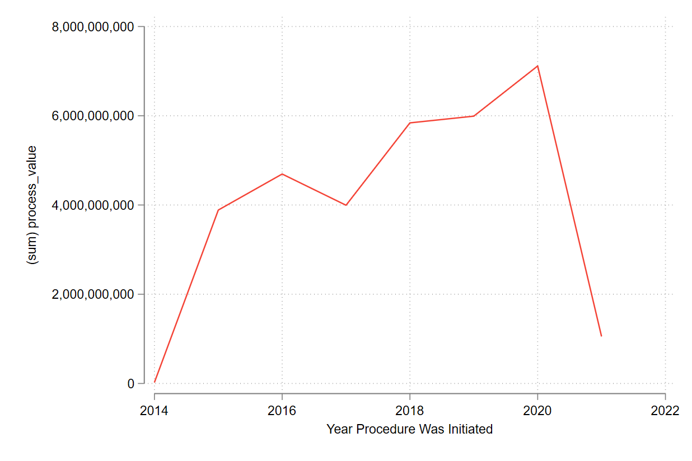
Two-way graphs
One nice freature of two-way graphs is that we can add layers to a plot:
graph twoway ///
(line process_value year_init) /// First layer
(scatter process_value year_init) // Second layer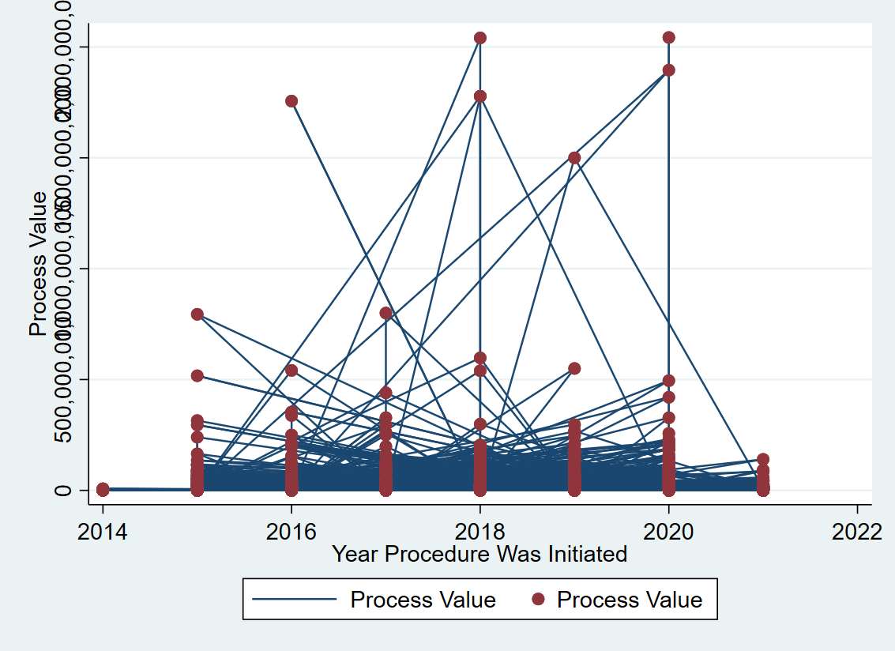
Two-way graphs
- When a graph has multiple layers, there are two different types of options we can add: layer-specific options and general graph options
- General graph options are separated by a comma and added outside of the parentheses that define a layer:
graph twoway ///
(line process_value year_init) /// First layer
(scatter process_value year_init) /// Second layer
, ///
legend(off) // general graph option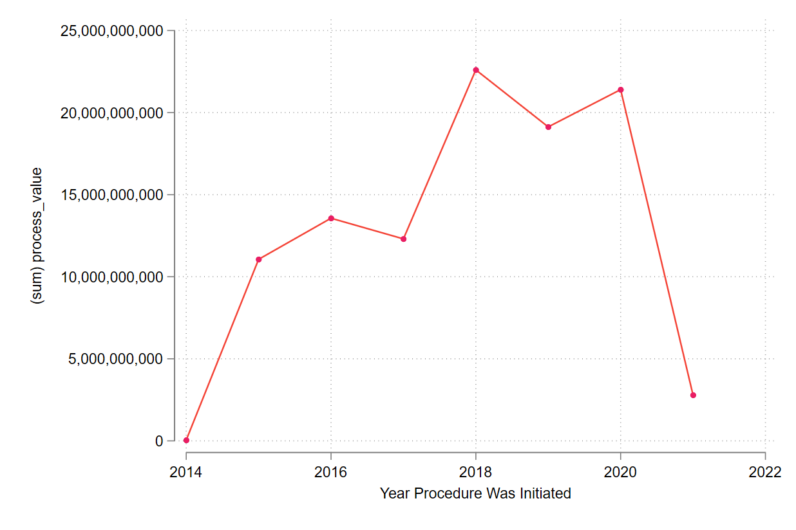
Two-way graphs
- When a graph has multiple layers, there are two different types of options we can add: layer-specific options and general graph options
- Layer-specific options are also separeted by a comma, but must be entered inside the parentheses that define the layer
graph twoway ///
(line process_value year_init) /// First layer
(scatter process_value year_init /// Second layer
, mlabel(process_value)) /// Option to be applied to the second layer
, ///
legend(off) // General graph option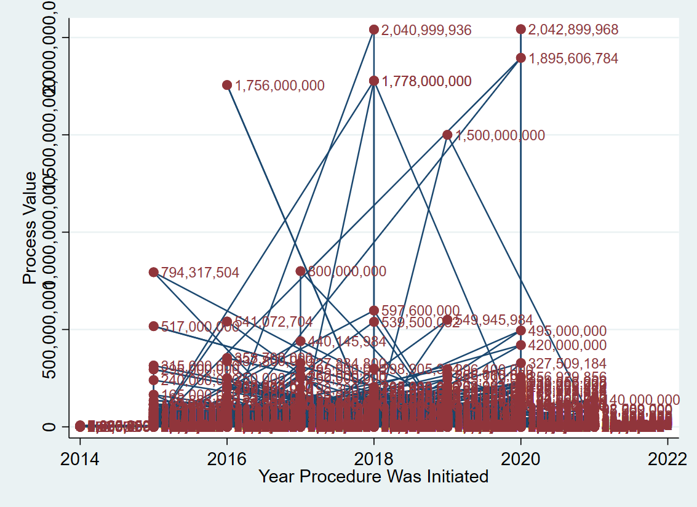
Two-way graphs
Exercise: add a title to the graph that was created previously
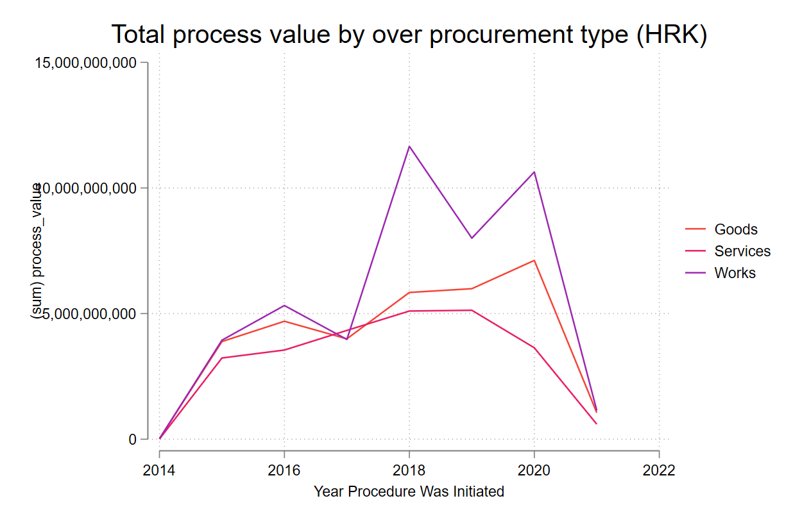
Two-way graphs
Exercise: add a title to the graph that was created previously
graph twoway ///
(line process_value year_init) /// First layer
(scatter process_value year_init /// Second layer
, mlabel(process_value)) /// Option to be applied to the second layer
, ///
legend(off) /// General graph option
title(Total process value by over (Lev)) <---- Title is a general graph option
gr export "img/tw5.png", replaceTwo-way graphs
- There is a large number of graph types that can be added as twoway graphs, including
- Bar plots
- Area plots
- Line plots
- Dropline plots
- To see a complete list of two-way types and their layer-specific options, type
help twoway
Final analysis: exporting tables
- The
collapsecommand that we just used to make sure our dataset was represeting year-level observations is also useful to create descriptive tables - The easiest way to export a descriptive table to Excel is to collapse the dataset, create the columns we want to present in our table, and export the entire dataset to Excel, as we did in session X
Steps:
- Load the constructed process dataset
- Collapse the data to display the desired statistics for each bid procedure
- Label the columns using label variable
- Export the resulting dataset to Excel
Exporting tables
use "../DataWork/Data/Final/final_process.dta", clear
collapse (sum) value = process_value (percent) percent = process_value (count) volume = bid_id, by(bid_procedure)
label variable value "Awarded value (Lev)"
label variable percent "Percent of awarded value"
label variable volume "Volume of processes"
export excel using "../DataWork/Output/Tables.xls", sheet("Bid procedure") sheetreplace firstrow(varlabels)Final analysis: exporting tables
Exercise: recreate the table shown below

- Open a new do-file
- Load the constructed process dataset
- Collapse the data to display the desired statistics for each bid procedure
- Label the columns using label variable
- Export the resulting dataset to Excel
Final analysis: exporting tables
Exercise: recreate the table shown below
use "../DataWork/Data/Final/final_process.dta", clear
collapse (sum) value = process_value ///
(percent) percent = process_value ///
(count) volume = bid_id ///
, ///
by(bid_procedure)
label variable value "Awarded value (Lev)"
label variable percent "Percent of awarded value"
label variable volume "Volume of processes"
export excel using "../DataWork/Output/Tables.xls", sheet("Bid procedure") sheetreplace firstrow(varlabels)Appendix
Changing layer colors
esttabStata visual library